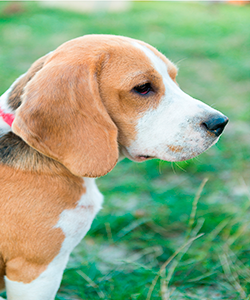
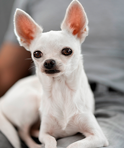
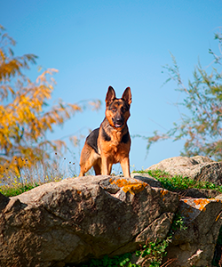
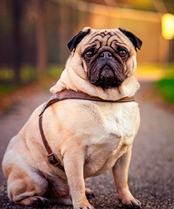

CATÁLOGO | |
|
|

🐾 Nombre: Foster
🎂 Edad estimada: 3 años
📝 Descripción breve:
Foster es un Beagle de mirada curiosa y energía tranquila. Su pelaje brillante de tonos marrón, blanco y negro la 
🐾 Nombre: Paiti
🎂 Edad estimada: 4 años
🧬 Especie: Chihuahua
📝 Descripción breve:
Pequeña pero con gran personalidad, Chispa encarna el carácter vivaz de los chihuahuas Su mirada intensa y postura alerta 
🐾 Nombre: Lobito
🎂 Edad estimada: 5 años
🧬 Especie: Pator aleman
📝 Descripción breve:
Es un pastor alemán de complexión robusta y atlética, con el clásico pelaje bicolor: negro profundo en lomo y cara, 
🐾 Nombre: Bongo
🎂 Edad estimada: 2 años
🧬 Especie: Pug
📝 Descripción breve:
Pequeño pero con mucho carácter, su físico compacto, orejas pequeñas y arrugas características lo hacen entrañable y expresivo.
|